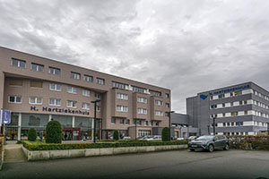

Mijn werkervaring ligt vooral in de verpleegkunde. Ik ben in 2003 afgestudeerd als gegradueerd verpleegkundige en ben daarna beginnen werken in hete Heilig Hart ziekenhuis Mol  Ik ben hier begonnen op de afdeling ‘Inwendige ziekten’. In die tijd was dit een afdeling waar vooral de longpatiënten, de maag-darm klachten en de hartziekten terecht kwamen. Ik had al vanaf het begin een voorliefde voor hartziekten. Een liefde waar ik na ongeveer een jaar werken de kans kreeg om deze verder uit te bouwen. Er ging namelijk een nieuwe afdeling open die waar enkel patiënten met hartziekten gingen terecht komen. Natuurlijk heb ik mij direct aangemeld om mee naar daar te verhuizen. Op deze afdeling heb ik ± 15jaar gewerkt. Mijn eerste prioriteit was het halen van een bachelor diploma in de verpleegkunde en na 2 jaar studeren heb ik dat dan ook gehaald. Ik ben echter gedurende mijn carrière blijven bij studeren en heb ik tal van bijscholingen en opleidingen gedaan. U kan mijn CV hier bekijken als u daar meer wil over weten. Echter na ongeveer 17 jaar in de verpleegkunde heb ik dit voor bekeken gehouden en ben ik mijn andere interesse gaan volgen: ICT.
Hierom volg ik ondertussen de opleiding graduaat ICT: Programmeren. Op het gebied van ICT heb ik tot nu toe enkel ervaring in het repareren van desktop en laptops. Ik heb hier dan ook een cursus voor gevolgd om dit op een goede en correcte manier te doen. Ik repareer zowel softwarematige problemen als hardware problemen. De eerlijkheid gebied mij om te zeggen dat hier niet zo veel ervaring in heb als ik zou willen. Ik heb dit vooral voor vrienden gedaan en heb er nooit reclame voor gemaakt om dit als (bij-) beroep te doen. Het belangrijkste aan werken als verpleegkundige op een afdeling (niet enkel cardiologie) is het goed interpreteren en doorgeven van de wensen van de patiënt. Een vaardigheid die ik ga proberen mee te nemen in mijn nieuwe loopbaan. Ik denk dat de basis van een goed programma/ goede website ligt in het goed interpreteren van de wensen van de klant. Door mijn ervaring die ik heb opgedaan in mijn beroep als verpleegkundige ben ik het gewend om door te blijven vragen tot ik er zeker van ben dat ik de boodschap goed heb begrepen en ook kan doorgeven aan collega’s en werkgevers.